用法：A型题点选项即判；X型题先多选、再点【判卷】；答完自动展开解析。刷完本课再过一遍底部【本课速记卡】，效果最好。
一、宫颈疾病10 题
A型·单选Q1P1 · 慢性宫颈炎
『假性宫颈糜烂』（宫颈柱状上皮异位）的本质是
答案与解析
答案：B
雌激素使宫颈管柱状上皮增生下移（柱状上皮异位，不是化生）；柱状上皮薄→血管显露呈红色、乳头状突起→貌似糜烂，实为正常生理现象（不是病）。真性糜烂指上皮坏死脱落形成的浅表缺损。
📖 讲义定位：P1 · 慢性宫颈炎
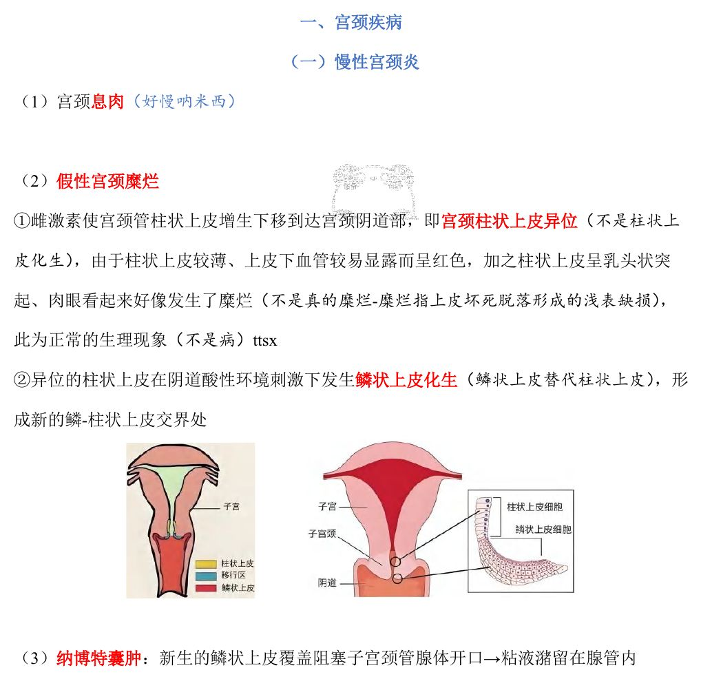
📷 讲义原图 · P1 · 慢性宫颈炎
A型·单选Q2P1 · 慢性宫颈炎
异位的宫颈柱状上皮在阴道酸性环境刺激下可发生
答案与解析
答案：C
异位柱状上皮在阴道酸性环境刺激下发生鳞状上皮化生（鳞状上皮替代柱状上皮）→形成新的鳞-柱状上皮交界处。
📖 讲义定位：P1 · 慢性宫颈炎
A型·单选Q3P1 · 慢性宫颈炎
纳博特囊肿的形成机制是
答案与解析
答案：A
纳博特囊肿：新生的鳞状上皮覆盖阻塞子宫颈管腺体开口→黏液潴留在腺管内。
📖 讲义定位：P1 · 慢性宫颈炎
A型·单选Q4P2 · 宫颈癌
宫颈癌的癌前病变是
答案与解析
答案：D
癌前病变＝宫颈鳞状上皮内病变：上皮部分被不同程度异型性细胞取代（挖空细胞或异型增生）；低级别 LSIL 常可消退。
📖 讲义定位：P2 · 宫颈癌
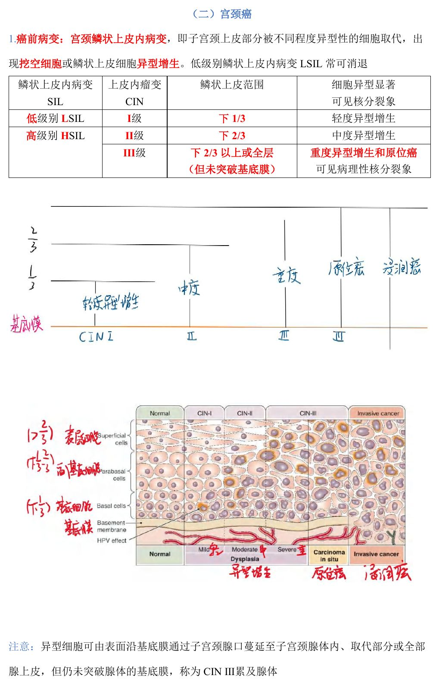
📷 讲义原图 · P2 · 宫颈癌
A型·单选Q5P2 · 宫颈癌
CIN Ⅲ 的异型细胞占据上皮的范围是
答案与解析
答案：D
分级：LSIL＝CINⅠ（下 1/3、轻度异型增生）；HSIL＝CINⅡ（下 2/3、中度）、CINⅢ（下 2/3 以上或全层、重度异型增生和原位癌，未突破基底膜）。
📖 讲义定位：P2 · 宫颈癌
A型·单选Q6P3 · 宫颈癌
宫颈癌最重要的致病因素是
答案与解析
答案：A
病因：HPV 尤其 16、18 型。
📖 讲义定位：P3 · 宫颈癌
A型·单选Q7P3 · 宫颈癌
高危型 HPV 感染引起宫颈癌的重要机制是病毒编码的
答案与解析
答案：B
HPV 编码的 E6 蛋白使 p53 失活、E7 蛋白使 RB 失活（讲义记法『5678』）。
📖 讲义定位：P3 · 宫颈癌
A型·单选Q8P3 · 宫颈癌
可辅助诊断 HSIL 的免疫组化指标是
答案与解析
答案：C
免疫组化 p16 弥漫强阳性可辅助诊断 HSIL（p16 蛋白是高危型 HPV 基因表达的指标）。
📖 讲义定位：P3 · 宫颈癌
A型·单选Q9P3 · 宫颈癌
宫颈癌最好发的部位是
答案与解析
答案：C
好发于鳞-柱状上皮交界处（移行带）；鳞癌最常见；最早和最常见扩散为淋巴转移（最早至子宫旁淋巴结）和直接蔓延。
📖 讲义定位：P3 · 宫颈癌
X型·多选Q10P2 · 宫颈癌
属于子宫颈 CIN Ⅲ 的有
答案与解析
答案：AD
CINⅢ＝重度异型增生＋原位癌；轻度＝CINⅠ、中度＝CINⅡ（C、B 错）。
📖 讲义定位：P2 · 宫颈癌
二、宫体疾病8 题
A型·单选Q11P4 · 子宫内膜异位症
子宫腺肌病（腺肌瘤）是指
答案与解析
答案：B
子宫内膜异位症：腺体和间质出现在子宫内膜以外的部位；异位于子宫肌层（距基底层 2mm 以上）称子宫腺肌病/瘤。
📖 讲义定位：P4 · 子宫内膜异位症
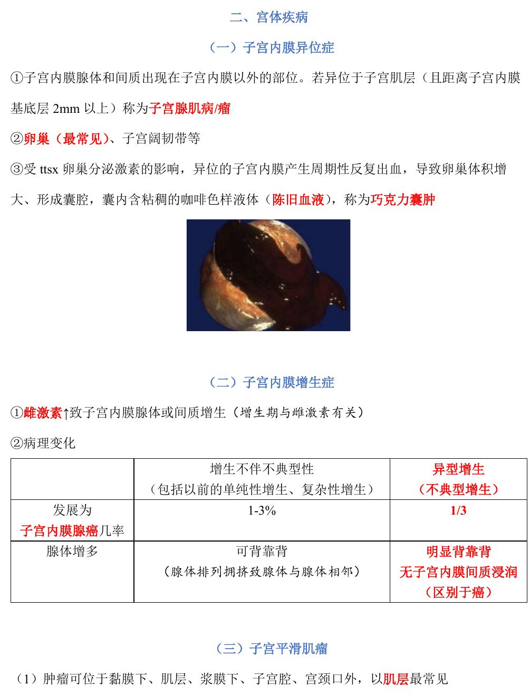
📷 讲义原图 · P4 · 子宫内膜异位症
A型·单选Q12P4 · 子宫内膜异位症
『巧克力囊肿』的本质是
答案与解析
答案：A
卵巢（最常见部位）子宫内膜异位：异位内膜周期性反复出血→卵巢体积增大、形成囊腔，内含粘稠咖啡色样液体（陈旧血液）＝巧克力囊肿。
📖 讲义定位：P4 · 子宫内膜异位症
A型·单选Q13P4 · 子宫内膜增生症
子宫内膜增生症的主要发生机制是
答案与解析
答案：D
雌激素↑致子宫内膜腺体或间质增生（增生期与雌激素有关）。
📖 讲义定位：P4 · 子宫内膜增生症
A型·单选Q14P4 · 子宫内膜增生症
子宫内膜异型增生（不典型增生）发展为子宫内膜腺癌的几率约为
答案与解析
答案：D
增生不伴不典型性（含以前称单纯性、复杂性增生）→癌变约 1-3%；异型增生（不典型增生）→癌变约 1/3。
📖 讲义定位：P4 · 子宫内膜增生症
A型·单选Q15P4 · 子宫内膜增生症
子宫内膜异型增生与高分化子宫内膜腺癌的鉴别要点是
答案与解析
答案：C
异型增生：腺体明显背靠背、无子宫内膜间质浸润（此为与癌的区别点）。
📖 讲义定位：P4 · 子宫内膜增生症
A型·单选Q16P5 · 子宫平滑肌瘤
关于子宫平滑肌瘤，下列叙述正确的是
答案与解析
答案：B
子宫平滑肌瘤：良性、无包膜、瘤细胞呈漩涡/编织/束状排列；可位于黏膜下、肌层、浆膜下等，以肌层最常见。
📖 讲义定位：P5 · 子宫平滑肌瘤
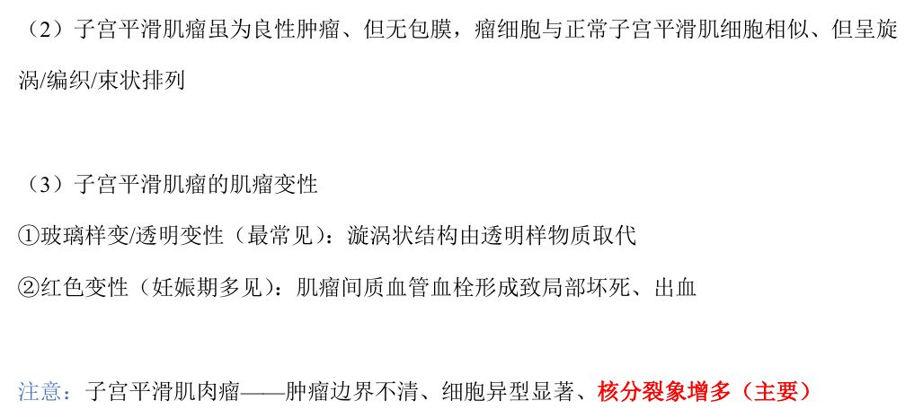
📷 讲义原图 · P5 · 子宫平滑肌瘤
A型·单选Q17P5 · 子宫平滑肌瘤
妊娠期子宫平滑肌瘤最易发生的变性是
答案与解析
答案：A
肌瘤变性：玻璃样变/透明变性最常见；红色变性多见于妊娠期（肌瘤间质血管血栓形成→局部坏死出血）。
📖 讲义定位：P5 · 子宫平滑肌瘤
A型·单选Q18P5 · 子宫平滑肌瘤
子宫平滑肌肉瘤区别于子宫平滑肌瘤的最主要依据是
答案与解析
答案：B
平滑肌肉瘤：肿瘤边界不清、细胞异型显著、核分裂象增多（主要）。
📖 讲义定位：P5 · 子宫平滑肌瘤
三、滋养细胞疾病11 题
A型·单选Q19P5 · 滋养细胞疾病
滋养细胞疾病的共同特征是
答案与解析
答案：A
共同特征：滋养层细胞异常增生、hCG 含量高于正常妊娠；包括葡萄胎（完全性、部分性、侵袭性）、绒癌、胎盘部位滋养细胞肿瘤、上皮样滋养细胞肿瘤。
📖 讲义定位：P5 · 滋养细胞疾病
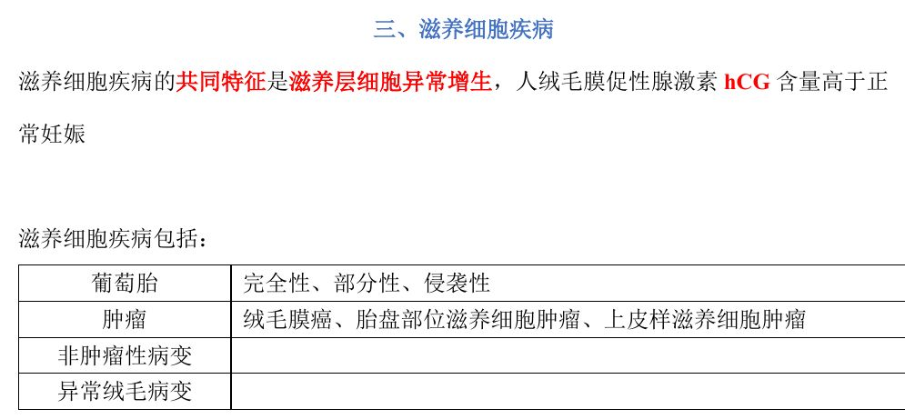
📷 讲义原图 · P5 · 滋养细胞疾病
A型·单选Q20P6 · 绒癌
绒毛膜癌最主要的转移途径和最常见的转移部位是
答案与解析
答案：D
绒癌『三无』但侵袭宿主血管、直接泡在母体血管中→最易血道转移；肺最常见（咯血），原发灶切除后转移灶可自行消退。
📖 讲义定位：P6 · 绒癌
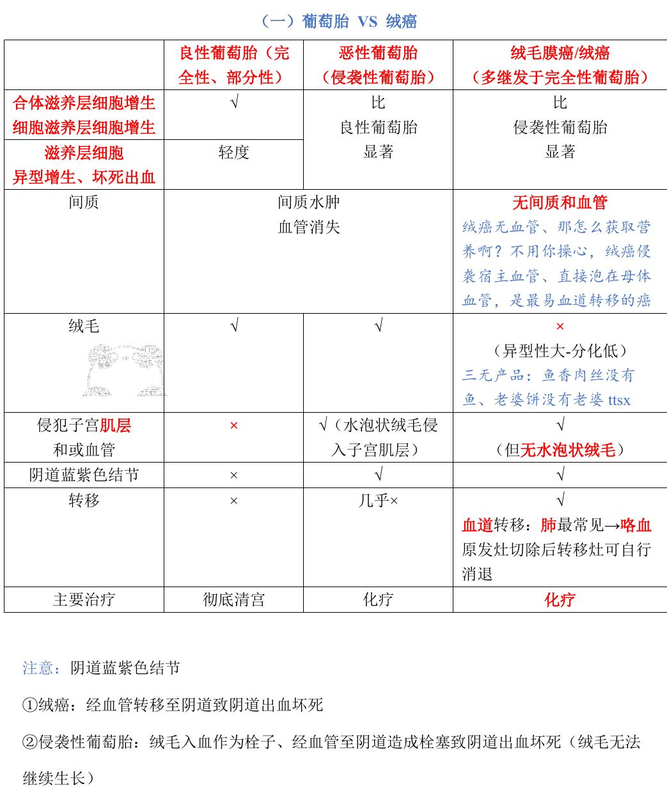
📷 讲义原图 · P6 · 绒癌
A型·单选Q21P6 · 绒癌
关于绒毛膜癌的组织学特点，正确的是
答案与解析
答案：C
绒癌：两种滋养层细胞（合体＋细胞滋养层）显著增生、高度异型；无绒毛、无水泡状绒毛；无间质和血管——『三无产品』。
📖 讲义定位：P6 · 绒癌
A型·单选Q22P6 · 葡萄胎 VS 绒癌
在子宫肌层内发现水肿的绒毛，应诊断为
答案与解析
答案：D
水泡状绒毛侵入子宫肌层（和/或血管）＝侵袭性葡萄胎；良性葡萄胎不侵犯肌层；绒癌无水泡状绒毛。
📖 讲义定位：P6 · 葡萄胎 VS 绒癌
A型·单选Q23P6 · 葡萄胎 VS 绒癌
绒毛膜癌区别于侵袭性葡萄胎的关键病理特点是
答案与解析
答案：C
绒癌无绒毛和水泡形成；出血坏死比恶性葡萄胎更明显、异型性更大（分化低）。
📖 讲义定位：P6 · 葡萄胎 VS 绒癌
A型·单选Q24P7 · 葡萄胎
葡萄胎的病理特点是
答案与解析
答案：B
胎盘绒毛因间质高度水肿、黏液样变性而增大呈葡萄状＝水泡状胎块（无血管-透明）；绒毛间质内血管消失或仅有少量无功能毛细血管；滋养层细胞异型增生。
📖 讲义定位：P7 · 葡萄胎
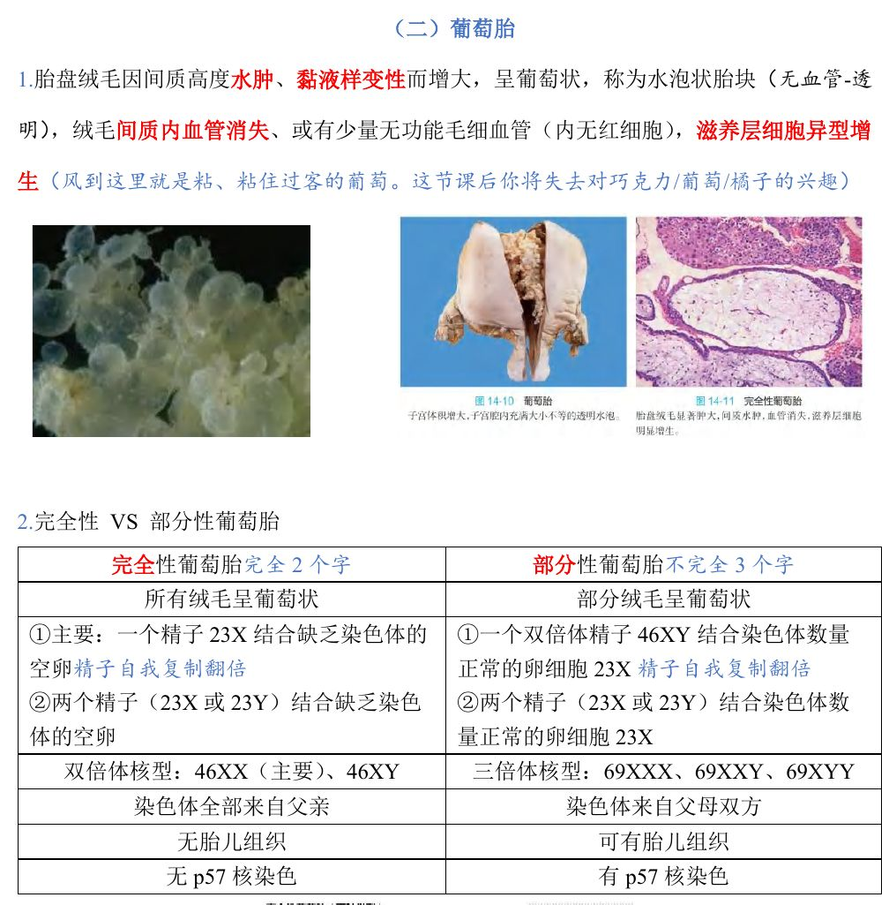
📷 讲义原图 · P7 · 葡萄胎
A型·单选Q25P7 · 葡萄胎
完全性葡萄胎的核型特点是
答案与解析
答案：A
完全性：一个精子 23X 结合空卵后自我复制（或两个精子结合空卵）→46XX（主要）、46XY，染色体全部来自父亲；无胎儿组织、无 p57 核染色。
📖 讲义定位：P7 · 葡萄胎
A型·单选Q26P7 · 葡萄胎
部分性葡萄胎的核型通常是
答案与解析
答案：B
部分性：一个双倍体精子 46XY 或两个精子结合染色体数量正常的卵细胞→三倍体；染色体来自父母双方、可有胎儿组织、有 p57 核染色。
📖 讲义定位：P7 · 葡萄胎
A型·单选Q27P7 · 葡萄胎
鉴别完全性与部分性葡萄胎有帮助的免疫组化指标是
答案与解析
答案：A
完全性葡萄胎无 p57 核染色；部分性葡萄胎有 p57 核染色。
📖 讲义定位：P7 · 葡萄胎
A型·单选Q28P8 · 其它滋养细胞肿瘤
胎盘部位滋养细胞肿瘤的特点是
答案与解析
答案：C
胎盘部位滋养细胞肿瘤（恶性）：hPL 多数（+）、hCG 少数（+）；单一的中间型滋养细胞（VS 绒癌为两种细胞）；无绒毛，可侵犯肌层、可转移。
📖 讲义定位：P8 · 其它滋养细胞肿瘤
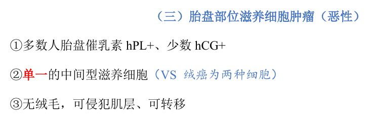
📷 讲义原图 · P8 · 其它滋养细胞肿瘤
X型·多选Q29P7 · 葡萄胎
关于完全性葡萄胎，下列叙述正确的有
答案与解析
答案：BD
C 错：完全性葡萄胎无胎儿组织（部分性才可有）；A 错：绒毛间质内血管消失或仅有少量无功能毛细血管。
📖 讲义定位：P7 · 葡萄胎
四、卵巢肿瘤8 题
A型·单选Q30P8 · 卵巢肿瘤
卵巢最常见的肿瘤类型是
答案与解析
答案：D
卵巢肿瘤分类：上皮性肿瘤（最常见，浆液性/黏液性囊腺瘤/癌等）、生殖细胞肿瘤、性索间质肿瘤。
📖 讲义定位：P8 · 卵巢肿瘤
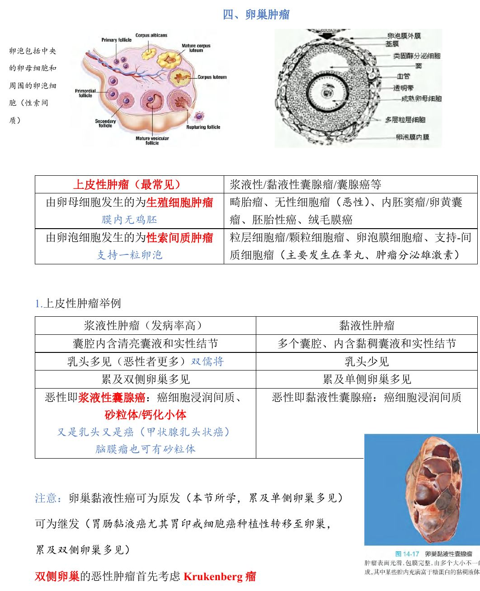
📷 讲义原图 · P8 · 卵巢肿瘤
A型·单选Q31P8 · 卵巢肿瘤
由卵母细胞发生的卵巢肿瘤属于
答案与解析
答案：A
由卵母细胞发生＝生殖细胞肿瘤：畸胎瘤、无性细胞瘤（恶性）、内胚窦瘤/卵黄囊瘤、胚胎性癌、绒毛膜癌。
📖 讲义定位：P8 · 卵巢肿瘤
A型·单选Q32P8 · 卵巢肿瘤
由卵泡细胞（性索间质）发生的卵巢肿瘤包括
答案与解析
答案：D
性索间质肿瘤：粒层细胞瘤/颗粒细胞瘤、卵泡膜细胞瘤、支持-间质细胞瘤（主要发生在睾丸、分泌雄激素）。
📖 讲义定位：P8 · 卵巢肿瘤
A型·单选Q33P8 · 上皮性肿瘤
下列卵巢上皮性肿瘤中，累及双侧卵巢较多见的是
答案与解析
答案：C
浆液性：囊腔内含清亮囊液和实性结节、乳头多见、累及双侧卵巢多见；黏液性：多个囊腔、含黏稠囊液、乳头少见、累及单侧卵巢多见。
📖 讲义定位：P8 · 上皮性肿瘤
A型·单选Q34P8 · 上皮性肿瘤
浆液性囊腺癌的特征性结构是
答案与解析
答案：B
浆液性囊腺癌：癌细胞浸润间质、可见砂粒体/钙化小体（甲状腺乳头状癌、脑膜瘤也可见砂粒体）。
📖 讲义定位：P8 · 上皮性肿瘤
A型·单选Q35P9 · 生殖细胞肿瘤
内胚窦瘤（卵黄囊瘤）的特点是
答案与解析
答案：B
内胚窦瘤/卵黄囊瘤：高度恶性、AFP 升高、疏网状结构、S-D 小体、嗜酸性小体（『ASSS』）。
📖 讲义定位：P9 · 生殖细胞肿瘤
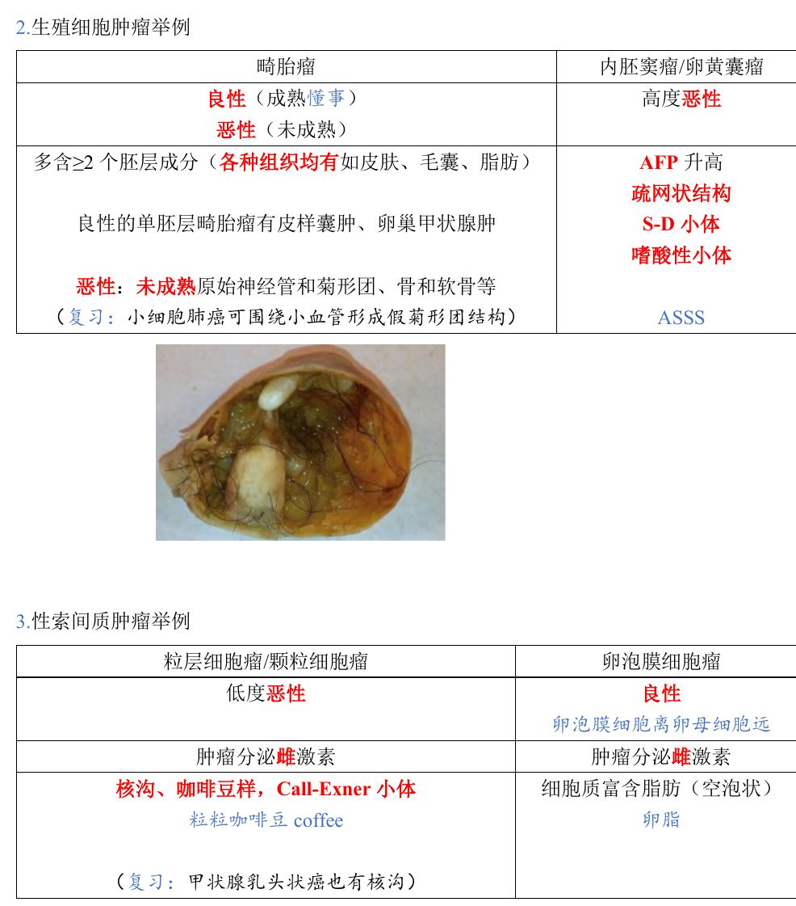
📷 讲义原图 · P9 · 生殖细胞肿瘤
A型·单选Q36P9 · 性索间质肿瘤
粒层细胞瘤（颗粒细胞瘤）的特点是
答案与解析
答案：A
粒层细胞瘤：低度恶性、分泌雌激素；核沟、咖啡豆样，Call-Exner 小体（『粒粒咖啡豆』）。（卵泡膜细胞瘤：良性、分泌雌激素、胞质富含脂肪呈空泡状。）
📖 讲义定位：P9 · 性索间质肿瘤
A型·单选Q37P8 · 注意
双侧卵巢的恶性肿瘤首先考虑
答案与解析
答案：D
双侧卵巢恶性肿瘤首先考虑 Krukenberg 瘤；卵巢黏液性癌：原发者（本节所学）累及单侧多见，继发者（胃印戒细胞癌种植转移）累及双侧多见。
📖 讲义定位：P8 · 注意
五、前列腺增生 VS 前列腺癌5 题
A型·单选Q38P9 · 前列腺
前列腺增生（肥大）的好发部位是
答案与解析
答案：C
前列腺增生：好发于移行带、可见淀粉小体（与雄激素有关）。
📖 讲义定位：P9 · 前列腺
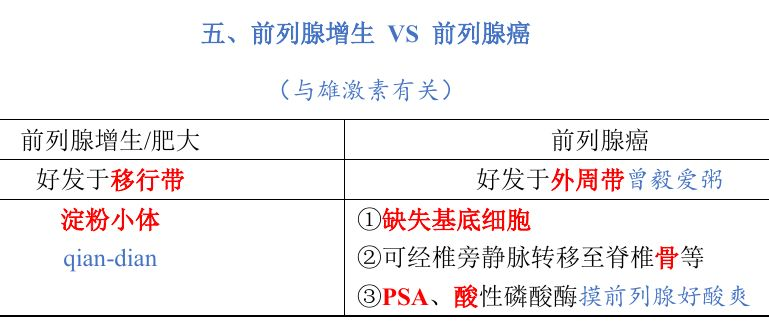
📷 讲义原图 · P9 · 前列腺
A型·单选Q39P9 · 前列腺
前列腺癌的好发部位是
答案与解析
答案：A
前列腺癌好发于外周带。
📖 讲义定位：P9 · 前列腺
A型·单选Q40P9 · 前列腺
前列腺癌最具鉴别意义的病理特点是
答案与解析
答案：B
前列腺癌关键：缺失基底细胞；可经椎旁静脉转移至脊椎骨等；PSA、酸性磷酸酶相关。
📖 讲义定位：P9 · 前列腺
A型·单选Q41P9 · 前列腺
前列腺癌血道转移最常见的部位是
答案与解析
答案：D
前列腺癌可经椎旁静脉转移至脊椎骨等（血道转移最常见部位＝骨）。
📖 讲义定位：P9 · 前列腺
A型·单选Q42P9 · 前列腺
与前列腺癌相关的血清学标志物是
答案与解析
答案：C
前列腺癌：PSA、酸性磷酸酶（『摸前列腺好酸爽』）。
📖 讲义定位：P9 · 前列腺
本课速记卡
宫颈
- 假性糜烂＝柱状上皮异位（生理现象）；柱状上皮→鳞化（新鳞-柱交界）；纳博特囊肿（腺口阻塞、黏液潴留）
- 癌前病变 SIL/CIN：LSIL＝Ⅰ（下 1/3）；HSIL＝Ⅱ（下 2/3）、Ⅲ（下 2/3 以上/全层，未突破基底膜）
- HPV16/18：E6→p53 失活、E7→RB 失活；p16 弥漫强阳性辅助诊断 HSIL
- 鳞癌最常见；好发鳞-柱交界（移行带）；扩散：淋巴（最早至子宫旁）＋直接蔓延
- 分期：Ⅰ 局限于宫颈（微小浸润≤5mm；浸润＞5mm）；Ⅱ 盆腔未及壁、阴道未及下 1/3；Ⅲ 盆壁/阴道下 1/3；Ⅳ 超骨盆或膀胱直肠
宫体
- 子宫内膜异位：卵巢最常见→巧克力囊肿；异位肌层（距基底 2mm 以上）＝腺肌病
- 内膜增生症：雌激素↑；不伴不典型性→癌 1-3%；异型增生→癌 1/3（背靠背、无间质浸润）
- 平滑肌瘤：良性无包膜、漩涡/编织排列；玻璃样变最常见、红色变性（妊娠期）；肉瘤＝核分裂象增多
葡萄胎 VS 绒癌
| 项目 | 良性葡萄胎 | 侵袭性葡萄胎 | 绒癌 |
|---|
| 滋养层异型/坏死出血 | 轻度 | 显著 | 显著（比侵袭性更明显） |
| 间质 | 间质水肿、血管消失 | 同左 | 无间质和血管 |
| 绒毛 | √ | √ | ×（无水泡状绒毛『三无』） |
| 侵犯肌层/血管 | × | √（水泡状绒毛） | √（无绒毛） |
| 阴道蓝紫色结节 | × | √ | √ |
| 转移 | × | 几乎× | √（血道，肺最常见→咯血） |
| 治疗 | 彻底清宫 | 化疗 | 化疗 |
完全性 VS 部分性葡萄胎
| 项目 | 完全性 | 部分性 |
|---|
| 起源 | 精子＋空卵（自我复制） | 双精/双倍体精子＋正常卵 |
| 核型 | 二倍体 46XX（主要）/46XY | 三倍体 69XXX/XXY/XYY |
| 染色体来源 | 全部来自父亲 | 来自父母双方 |
| 绒毛/胎儿 | 全部葡萄状；无胎儿 | 部分葡萄状；可有胎儿 |
| p57 | 无核染色 | 有核染色 |
卵巢肿瘤
- 分类：上皮性（最常见）／生殖细胞（卵母细胞）／性索间质（卵泡细胞）
- 浆液性：清亮囊液、乳头多、双侧多、砂粒体；黏液性：稠囊液、乳头少、单侧多
- 生殖细胞：畸胎瘤（≥2 胚层；皮样囊肿、卵巢甲状腺肿；未成熟＝恶性）、内胚窦瘤（AFP↑、S-D 小体、高度恶性）
- 性索间质：粒层细胞瘤（低度恶性、雌激素、Call-Exner、咖啡豆）、卵泡膜细胞瘤（良性、雌激素、胞质脂肪）
- 双侧卵巢恶性→首先考虑 Krukenberg 瘤（胃印戒细胞癌种植）
前列腺增生 VS 前列腺癌
| 项目 | 增生 | 癌 |
|---|
| 好发部位 | 移行带 | 外周带 |
| 特征 | 腺体增生、淀粉小体、基底细胞完整 | 缺失基底细胞 |
| 转移 | —— | 经椎旁静脉至脊椎骨等（骨最常见） |
| 标志物 | —— | PSA、酸性磷酸酶 |
📚 网站题库（导入）17 组 · 34 题
说明：本部分为外部题库导入（来源：「西综题库」网站 · 病理学），题干、选项与答案保留原样；标注「教师补充」的答案未经讲义逐项复核。做题方式：点字母选择（多选后点【判卷】；答案可点开「答案与出处」查看）。
宫颈鳞状上皮内病变分级B型题
A 病变累及鳞状上皮下1/3
B 上皮内瘤变CIN I级
C 中度异型增生
D 病变累及鳞状上皮下2/3
E 轻度异型增生
F 上皮内瘤变CIN II级
G 重度异型增生和原位癌
H 病变累及鳞状上皮下2/3以上或全层（未突破基底膜）
I 上皮内瘤变CIN III级
J 可消退，随诊即可
网站题W1第18讲 · 第2页
低级别鳞状上皮内病变（LSIL）
答案与出处
答案：ABEJ
📖 第18讲 · 第2页
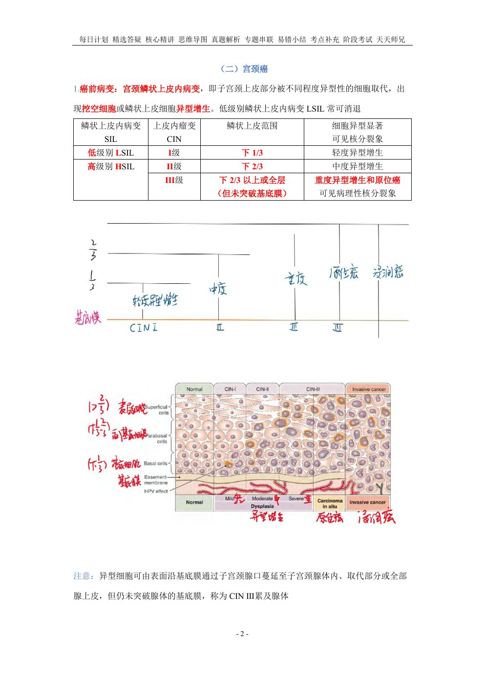
📷 讲义原图 · 第18讲 · 第2页
网站题W2第18讲 · 第2页
高级别鳞状上皮内病变（HSIL）
答案与出处
宫颈癌0期B型题
A 浸润深度≤基底膜下5mm
B 癌进入盆腔，但未累及盆腔壁
C 癌侵及盆腔壁
D 浸润深度>基底膜下 5mm
E 癌超越骨盆，或累及膀胱直肠
F 癌侵及阴道、但未累及阴道下1/3
G 癌侵及阴道下1/3
H 癌未突破基底膜
I 癌局限于子宫颈内
网站题W3第18讲 · 第3页
宫颈癌0期
答案与出处
答案：H
📖 第18讲 · 第3页
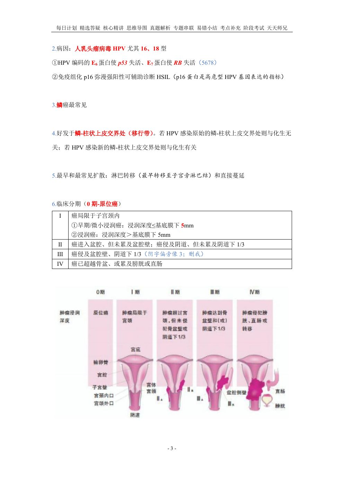
📷 讲义原图 · 第18讲 · 第3页
网站题W4第18讲 · 第3页
宫颈癌I期
答案与出处
网站题W5第18讲 · 第3页
宫颈癌II期
答案与出处
网站题W6第18讲 · 第3页
宫颈癌III期
答案与出处
网站题W7第18讲 · 第3页
宫颈癌IV期
答案与出处
网站题W8第18讲 · 第3页
早期/微小浸润癌
答案与出处
网站题W9第18讲 · 第3页
浸润癌
答案与出处
网站题W10第18讲 · 第3页
原位癌
答案与出处
良性葡萄胎（完全性、部分性）B型题
A 有合体滋养层细胞和细胞滋养层细胞增生
B 间质水肿血管消失
C 合体滋养层细胞增生和细胞滋养层细胞增生比良性葡萄胎显著
D 滋养层细胞轻度异型增生、坏死出血
E 合体滋养层细胞增生和细胞滋养层细胞增生比侵袭性葡萄胎显著
F 无间质和血管
G 滋养层细胞异型增生、坏死出血比良性葡萄胎显著
H 有绒毛
I 异型性大-分化低
J 滋养层细胞异型增生、坏死出血比侵袭性葡萄胎显著
K 无绒毛
L 不侵犯子宫肌层和或血管
M 侵犯子宫肌层和或血管（水泡状绒毛侵入子宫肌层）
N 阴道有蓝紫色结节（经血管转移至阴道致阴道出血坏死）
O 阴道有蓝紫色结节（绒毛入血作为栓子，经血管至阴道造成栓塞，致阴道出血坏死——绒毛无法继续生长）
P 癌细胞直接侵犯子宫肌层和或血管（但无水泡状绒毛）
Q 阴道无蓝紫色结节
R 无转移
S 主要治疗方式为彻底清宫
T 血道转移，肺最常见
U 多继发于完全性葡萄胎
V 几乎不转移
W 主要治疗方式为化疗
网站题W11第18讲 · 第6页
良性葡萄胎（完全性、部分性）
答案与出处
答案：ABDHLQRS
📖 第18讲 · 第6页
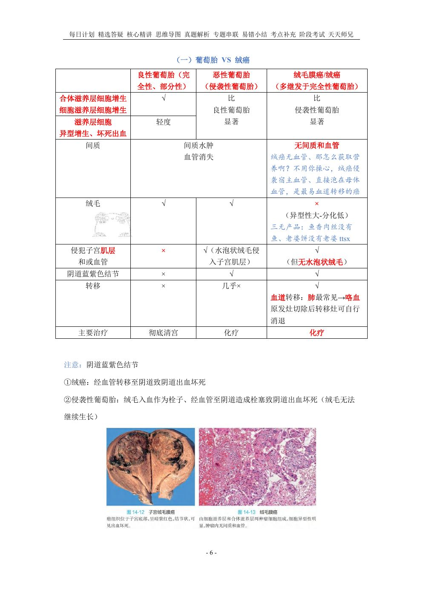
📷 讲义原图 · 第18讲 · 第6页
网站题W12第18讲 · 第6页
恶性葡萄胎（侵袭性葡萄胎）
答案与出处
网站题W13第18讲 · 第6页
绒毛膜癌/绒癌
答案与出处
答案：EFIJKNPTUW
📖 第18讲 · 第6页
完全性与部分性葡萄胎B型题
A 所有绒毛呈葡萄状
B 主要为一个精子23X结合缺乏染色体的空卵
C 染色体来自父母双方
D 无胎儿组织
E 无p57核染色
F 部分绒毛呈葡萄状
G 一个双倍体精子46XY结合染色体数量正常的卵细胞23X
H 双倍体核型：46XX（主要）、46XY
I 三倍体核型：69XXX、69XXY、69XYY
J 染色体全部来自父亲
K 可有胎儿组织
L 有p57核染色
M 两个精子（23X或23Y）结合缺乏染色体的空卵
N 两个精子（23X或23Y）结合染色体数量正常的卵细胞23X
网站题W14第18讲 · 第7页
完全性葡萄胎
答案与出处
答案：ABDEHJM
📖 第18讲 · 第7页
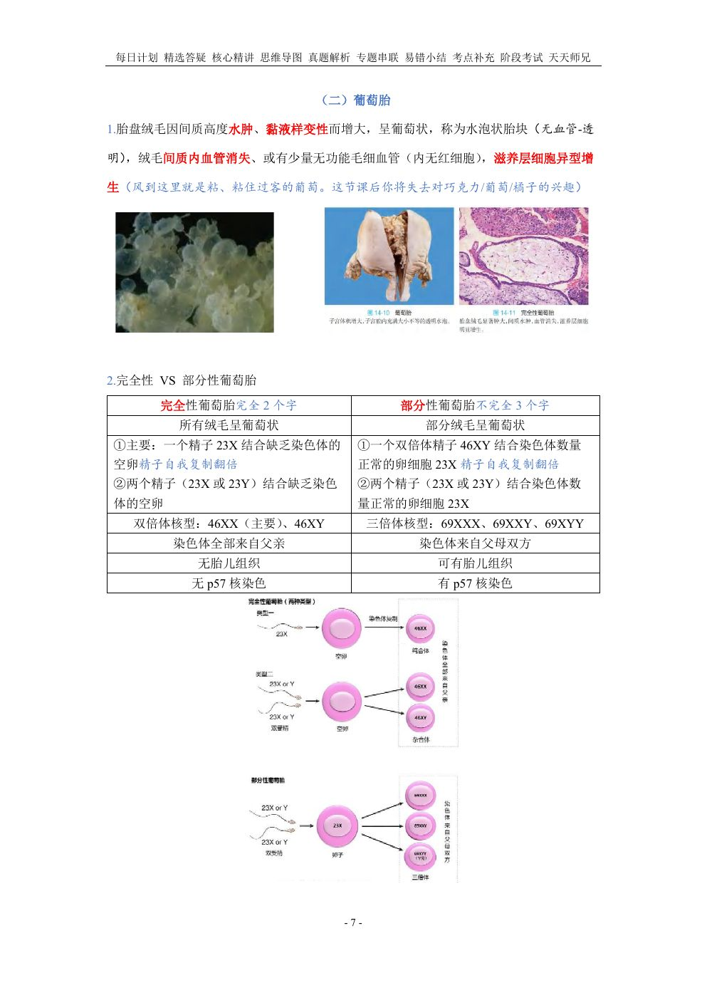
📷 讲义原图 · 第18讲 · 第7页
网站题W15第18讲 · 第7页
部分性葡萄胎
答案与出处
卵巢肿瘤的组织来源B型题
A 浆液性囊腺瘤
B 畸胎瘤
C 黏液性囊腺瘤
D 浆液性囊腺癌
E 无性细胞瘤（恶性）
F 肿瘤分泌雄激素
G 黏液性囊腺癌
H 内胚窦瘤/卵黄囊瘤
I 粒层细胞瘤/颗粒细胞瘤
J 胚胎性癌
K 卵泡膜细胞瘤
L 绒毛膜癌
M 支持-间质细胞瘤
N 主要发生在睾丸
O 最常见的卵巢肿瘤
网站题W16第18讲 · 第8页
上皮性肿瘤
答案与出处
答案：ACDGO
📖 第18讲 · 第8页
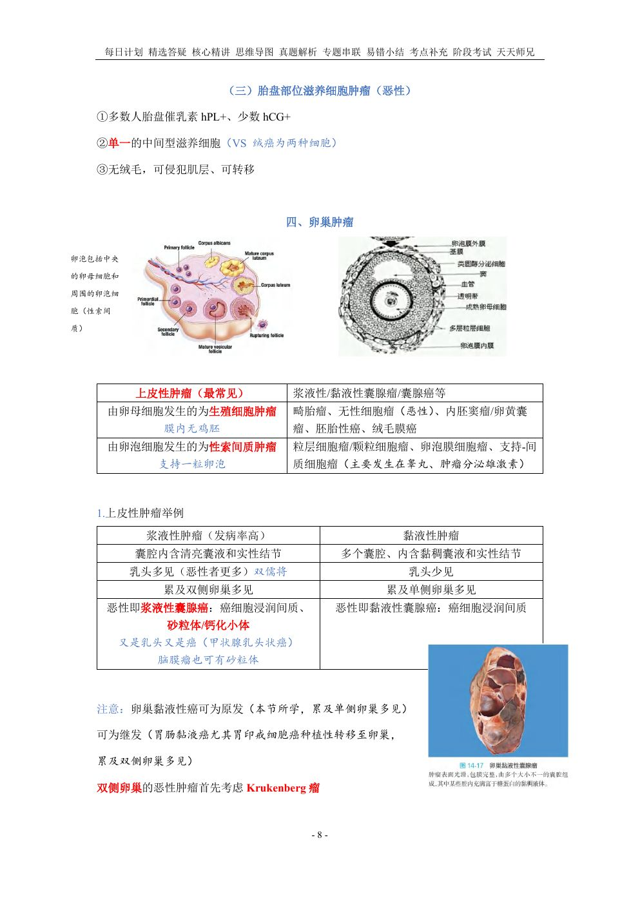
📷 讲义原图 · 第18讲 · 第8页
网站题W17第18讲 · 第8页
由卵母细胞发生的生殖细胞肿瘤
答案与出处
网站题W18第18讲 · 第8页
由卵泡细胞发生的性索间质肿瘤
答案与出处
浆液性与黏液性卵巢肿瘤B型题
A 囊腔内含清亮囊液和实性结节
B 乳头少见
C 累及双侧卵巢多见
D 恶性即浆液性囊腺癌：癌细胞浸润间质、砂粒体/钙化小体
E 恶性即黏液性囊腺癌：癌细胞浸润间质
F 多个囊腔、内含黏稠囊液和实性结节
G 乳头多见（恶性者更多）
H 累及单侧卵巢多见
I 发病率高的上皮性肿瘤
网站题W19第18讲 · 第8页
浆液性肿瘤
答案与出处
网站题W20第18讲 · 第8页
黏液性肿瘤
答案与出处
畸胎瘤与内胚窦瘤B型题
A 有良性和恶性
B 高度恶性
C 多含两个以上胚层成分（各种组织均有，如皮肤、毛囊、脂肪）
D AFP升高
E 良性的单胚层畸胎瘤有皮样囊肿、卵巢甲状腺肿
F S-D小体
G 疏网状结构
H 恶性者含未成熟原始神经管和菊形团、骨和软骨等
I 嗜酸性小体
J 良性成熟，恶性未成熟
网站题W21第18讲 · 第9页
畸胎瘤
答案与出处
答案：ACEHJ
📖 第18讲 · 第9页
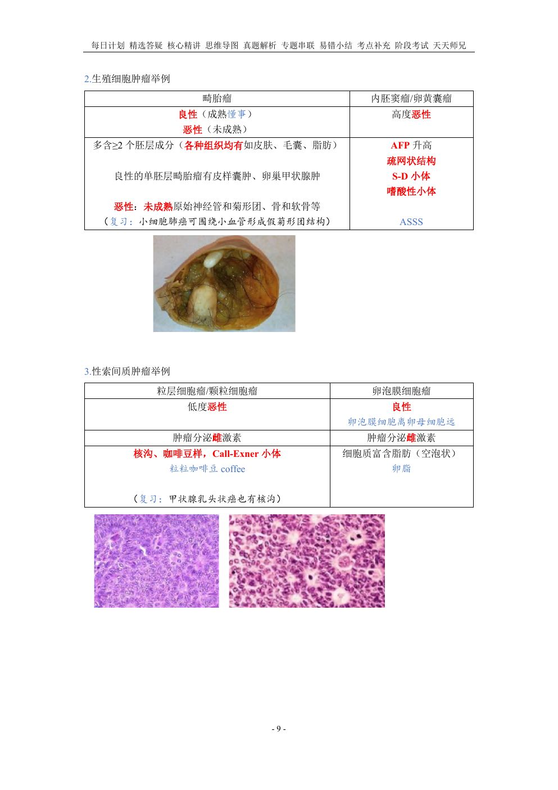
📷 讲义原图 · 第18讲 · 第9页
网站题W22第18讲 · 第9页
内胚窦瘤/卵黄囊瘤
答案与出处
粒层细胞瘤与卵泡膜细胞瘤B型题
A 低度恶性
B 良性
C 核沟、咖啡豆样、Call-Exner小体
D 细胞质富含脂肪（空泡状）
E 肿瘤分泌雌激素
网站题W23第18讲 · 第9页
粒层细胞瘤/颗粒细胞瘤
答案与出处
网站题W24第18讲 · 第9页
卵泡膜细胞瘤
答案与出处
前列腺增生与前列腺癌B型题
A 可经椎旁静脉转移至脊椎骨等
B 好发于移行带
C 好发于外周带
D 缺失基底细胞
E 淀粉小体
F PSA、酸性磷酸酶
G 与雄激素有关
网站题W25第18讲 · 第10页
前列腺增生/肥大
答案与出处
答案：BEG
📖 第18讲 · 第10页
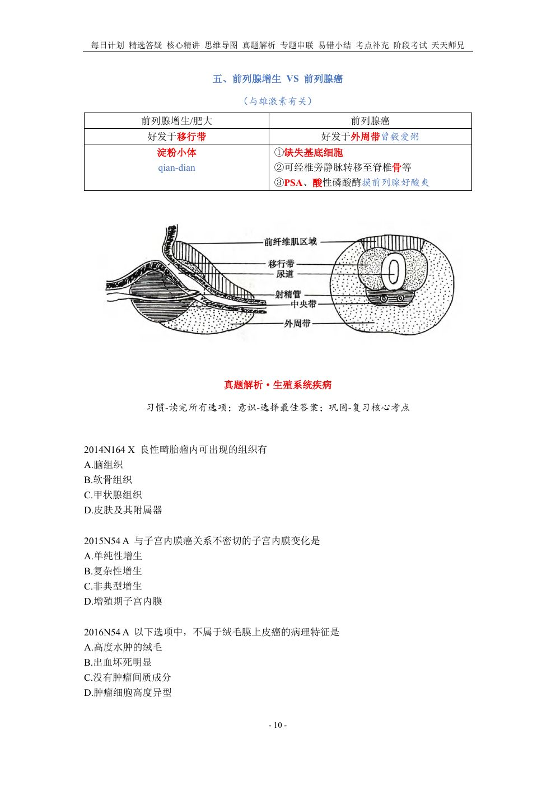
📷 讲义原图 · 第18讲 · 第10页
网站题W26第18讲 · 第10页
前列腺癌
答案与出处
子宫颈浸润癌的大体类型有多项选择教师补充
网站题W27第18讲 · 第11页
子宫颈浸润癌的大体类型有(多选题)
答案与出处
答案：ABCD
📖 第18讲 · 第11页
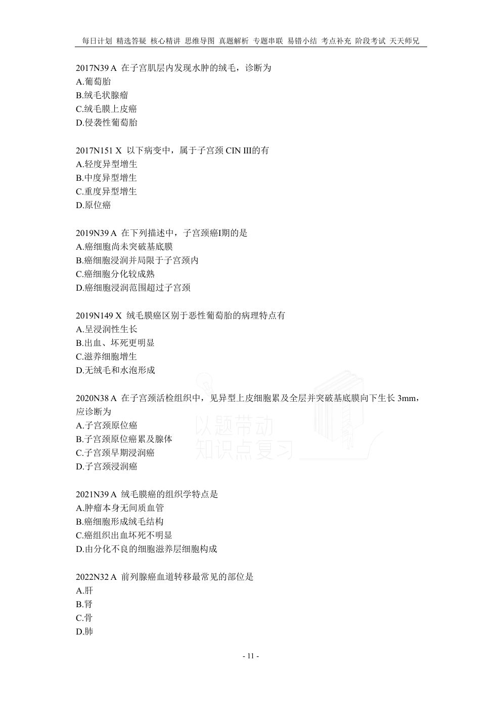
📷 讲义原图 · 第18讲 · 第11页
临床上主要表现为功能性子宫出血的疾病为单项选择教师补充
A 子宫颈癌
B 子宫内膜腺癌
C 子宫内膜增生症
D 子宫内膜异位症
网站题W28第18讲 · 第4页
临床上主要表现为功能性子宫出血的疾病为(单选题)
答案与出处
答案：C
📖 第18讲 · 第4页
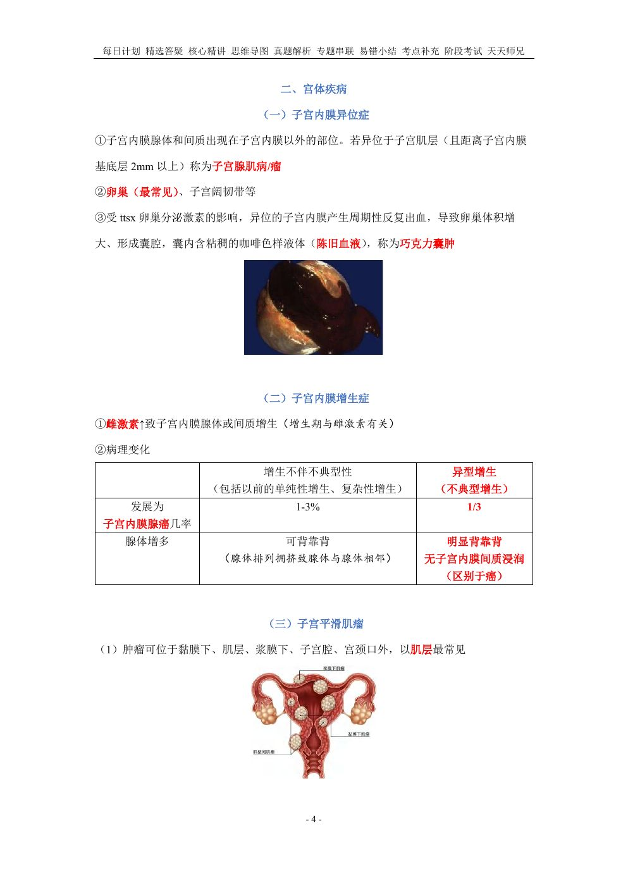
📷 讲义原图 · 第18讲 · 第4页
子宫内膜癌累及子宫体和子宫颈属于单项选择教师补充
网站题W29第18讲 · 第10页
子宫内膜癌累及子宫体和子宫颈属于(单选题)
答案与出处
以下关于子宫平滑肌瘤的描述,正确的有多项选择教师补充
A 是女性生殖系统最常见的肿瘤
B 肿瘤表面光滑,界清,有包膜
C 旋涡状排列,核分裂象少见
D 可伴红色变性,极少恶变
网站题W30第18讲 · 第5页
以下关于子宫平滑肌瘤的描述,正确的有(多选题)
答案与出处
答案：ACD
📖 第18讲 · 第5页
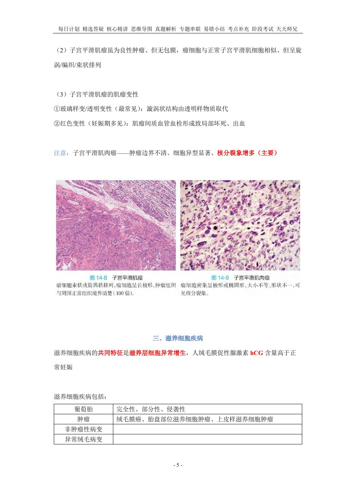
📷 讲义原图 · 第18讲 · 第5页
胎盘部位滋养细胞肿瘤的病理变化有多项选择教师补充
A 源于中间型滋养细胞的恶性肿瘤
B 常侵入子宫肌层,伴坏死、出血
C Ki-67 增殖指数通常 > 90%
D 肿瘤细胞常弥漫性表达 hCG
网站题W31第18讲 · 第8页
胎盘部位滋养细胞肿瘤的病理变化有(多选题)
答案与出处
可产生雌激素的肿瘤有多项选择教师补充
A 子宫平滑肌瘤
B 卵泡膜细胞瘤
C 畸胎瘤
D 粒层细胞瘤
网站题W32第18讲 · 第8页
可产生雌激素的肿瘤有(多选题)
答案与出处
卵巢上皮性交界性肿瘤的特征为多项选择教师补充
A 肿瘤细胞呈轻至中度异型性
B 明显的破坏性间质浸润
C 不典型增生的范围≥10%
D 常可见S-D小体
网站题W33第18讲 · 第4页
卵巢上皮性交界性肿瘤的特征为(多选题)
答案与出处
前列腺增生症和前列腺癌的共同点有多项选择教师补充
A 发生均与雄激素有关
B 病灶和周围组织的界限可不清
C 常含有淀粉小体
D 临床上可引起尿道梗阻
网站题W34第18讲 · 第10页
前列腺增生症和前列腺癌的共同点有(多选题)
答案与出处
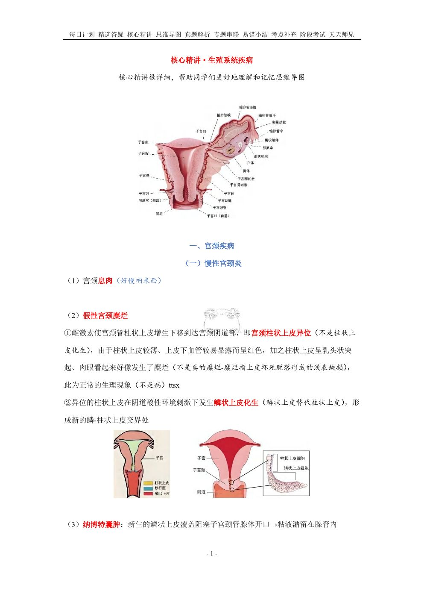
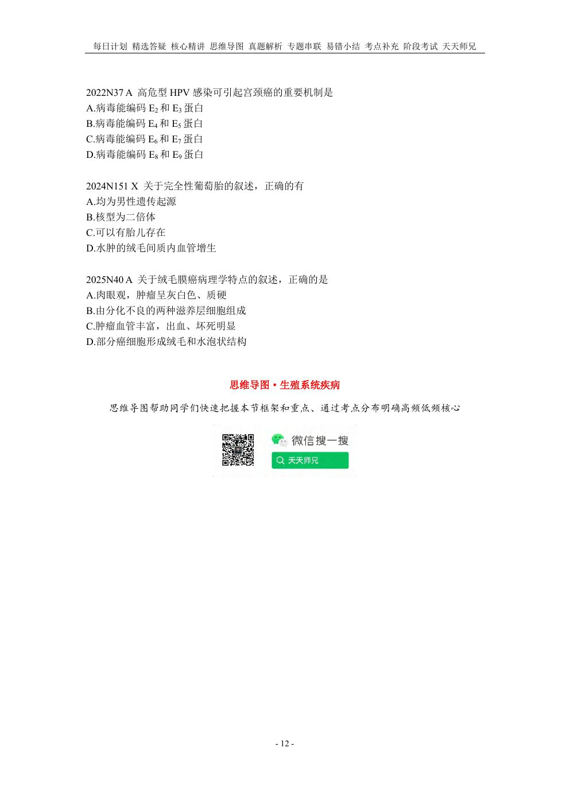